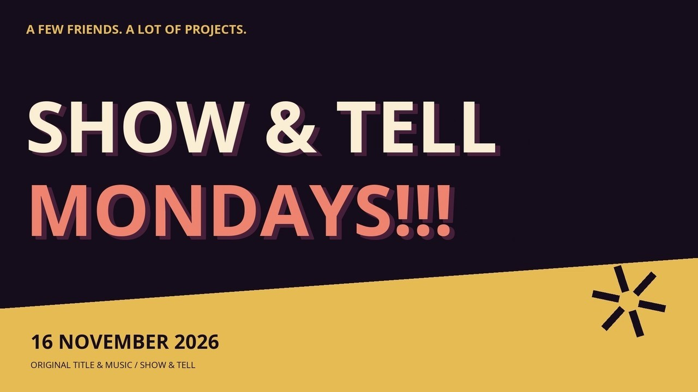

24:18You are what you eat
Anthony and Josh's game-jam WIP — a 20-second game on the theme "you are what you eat" (slime, tofu, cotton candy, hot tamales). Bryan makes first contact; Kaya plays with 3DS homebrew; and Pip weighs in on whether Jack's pro-bono electrical work is a good idea.